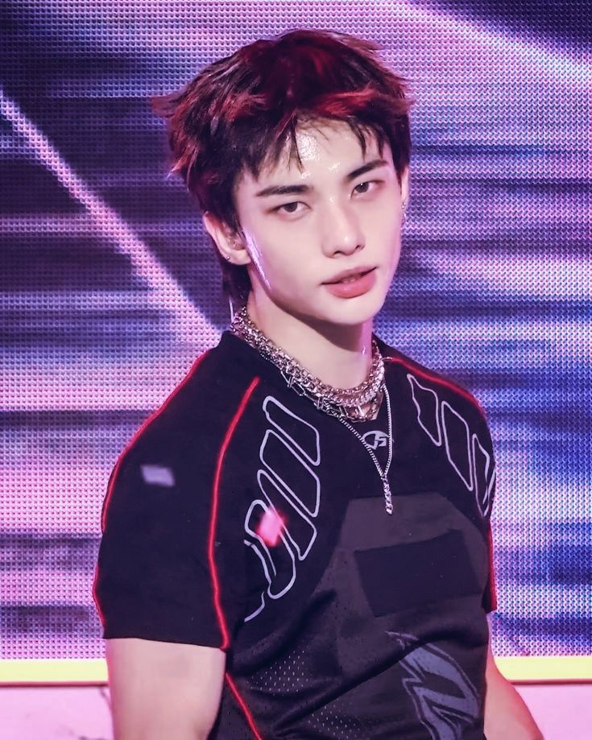
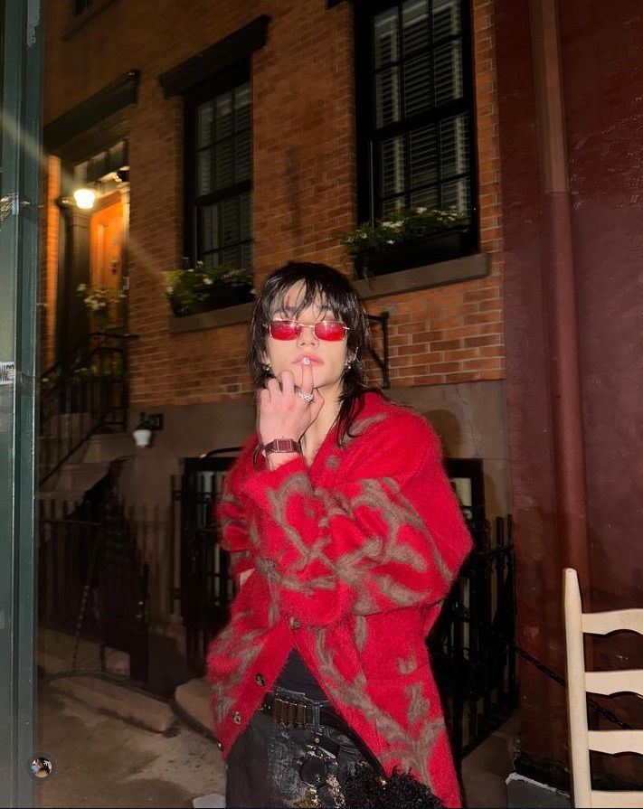
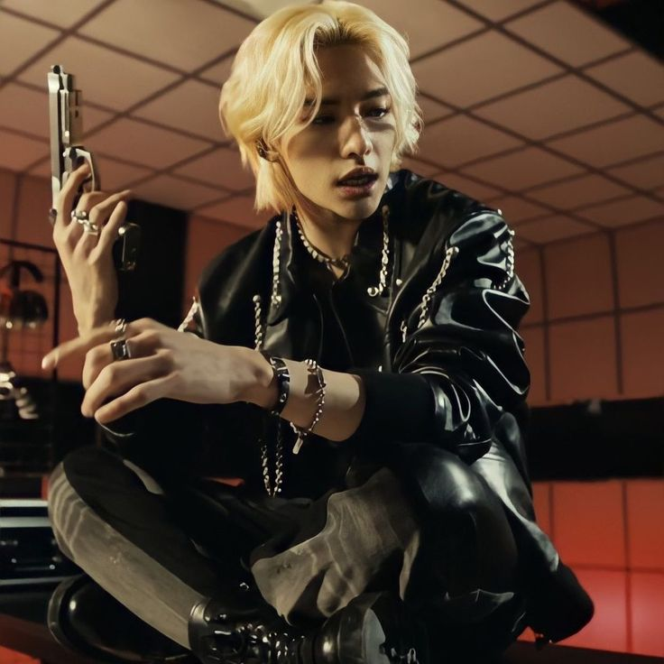

Hyun Jin
Perfil
Nombre completo: 황현진 / Hwang Hyun Jin
Nombre japonés: ヒョンジン
Apodos: Jinnie, Principe.
Profesión: Rapero, Cantante, Bailarín, Modelo y MC.
Fecha de nacimiento:20-Marzo-2000 (25 Años)
Lugar de nacimiento: Seúl, Corea del Sur
Estatura: 179 cm
Peso: 65 kg
Tipo de sangre: B
Signo zodiacal: Piscis
Signo zodiacal chino: Dragón
Familia: Padres.
Agencia: JYP Entertainment
Dramas
A-TEEN 2 (Naver TV, 2019) cameo
Programas de TV
Show! Music Core (MBC, 2021) MC junto a Cha Ni y Min Ju
Show! Music Core (MBC, 2020) MC junto a Cha Ni
Show! Music Core (MBC, 2019) MC junto a Cha Ni y Kang Mi Na
Weekly Idol (03.04.19) Ep. 401
Weekly Idol (14.11.18) Ep. 381
Idol Room (JTBC, 18.09.2018) Ep. 20 junto a GOT7 (Invitado Especial)
Stray Kids (Mnet, 2017)
Programa de Radio
(SBS) Power FM Young Street radio (15.04.2019) junto a Han, Felix y Seung Min
(SBS) Choi Hwajeongs Power Time (12.04.2019) junto a Chan y Felix
(MBC) Idol Radio (09.02.2019) Ep. 129 junto a Lee Know y Ji Beom de Golden Child
(MBC) Idol Radio (09.02.2019) Ep. 122 junto a Young Hoon de THE BOYZ y Hong Seok de PENTAGON
(MBC) Idol Radio (09.11.2018) Ep. 39 junto a Moon Bin de ASTRO y Hwi Young de SF9
(SBS) POWER FM Park Sohyun's LOVE GAME (03.11.2018) junto a Chan y I.N
(SBS Radio) NCT Night Night (15.11.2018) junto a I.N, Seung Min, Felix y Han
Premios
2025 10th Asia Artist Awards: Best Choice
2021 K-CHAMP Awards: Best Weekly Idol Individual Cam (Male)
Curiosidades
Estudios:Sungil Elementary School (Graduado)
Seongae Middle School (Graduado)
Tohoku High School (Transferido)
Seoul Performing Arts High School, Practical Dance Department (Graduado)
Periodo de entrenamiento: 2 años.
Modelo a seguir:Jin Young de GOT7.
Religión:Católico.
Nombre bautismal:Joseph.
Artistas favoritos:DEAN y Crush.
Hobbies: Bailar y hacer deporte.
Idiomas:Coreano (Materno) e Inglés (Intermedio).
Vivió en Las Vegas, Estados Unidos por un corto período de tiempo cuando
tenía alrededor de 6-7 años. Cuando vivía en Las Vegas usaba el nombre Sam.
Tiene 5 canciones con derechos de autor a su nombre según Korea Music Copyright Association.
Tiene un perrito llamado Kkami.
Antes tenía un perrito llamado Kkomi, al cual le dedicó ''Little Star''.
Colaboró con San de ATEEZ y Ju Yeon de THE BOYZ para los MAMA 2020. Apareció por
primera vez en la lista de TC Candler de "The 100 most handsome faces of 2020" quedando en el puesto #36.
El 22 de Febrero de 2021, un usuario anónimo realizó una publicación en una comunidad en línea que decía
que un internauta fue víctima de 'bullying' en la misma escuela secundaria a la que asistía Hyun Jin, siendo
él su agresor. El usuario 'A' acusó al artista de haberle agredido verbalmente en la escuela media. En su
testimonio, mencionó que él entrenaba para ser actor y que Hyun Jin lo menospreciaba con frases hirientes.
JYPE hizo un primer comunicado el martes 23 y explicó que estaban investigando los hechos con compañeros de colegio.
El 25 de Junio, luego de cuatro meses de inactividad, Hyun Jin regresa a las actividades grupales siendo
incluido en el nuevo single "Mixtape: 애".
imágenes




